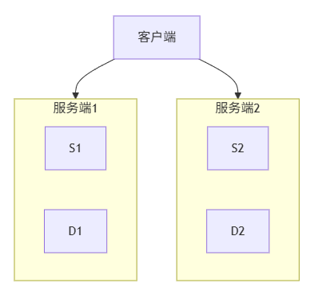
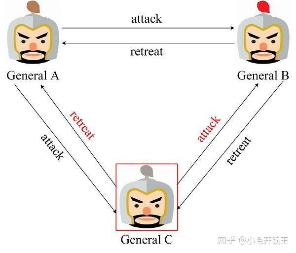

分布式理论和算法
参考文献
- https://javabetter.cn/sidebar/sanfene/fenbushi.html
- https://javaguide.cn/distributed-system/protocol/cap-and-base-theorem.html
- https://mp.weixin.qq.com/s/bFDLb6U6EgI-DvCdLTq_QA
CAP 理论
CAP 就是 Consistency (一致性)、Availability (可用性)、Partition Tolerance (分区容错性)这三个单词的首字母组合
- 一致性：所有节点在同一时间看到的数据都是一致的
- 可用性：系统在正常时间内返回合理的响应，即使部分节点出现故障，系统仍然能提供服务
- 分区容错性：网络分区故障发生时，系统仍然能正常运行
分布式系统中，多个节点之间的网络本来是联通的，但因为某些故障，某些节点之间不连通了，整个网络就分成了几块区域，这就叫网络分区。
一致性分为强一致性和最终一致性。涉及金钱的必须保证强一致性，即任何时候所有节点看到的数据都是相同的。最终一致性允许系统在短时间内存在数据不一致的情况，例如分布式缓存系统。
CAP 理论中，分区容错性 P 一定需要满足，在此基础上，只能满足可用性 A 或一致性 C，但不能同时满足。
为什么？假设以下场景

用户访问了 服务端1，修改了 D1 的数据。用户访问 服务端2，此时 D1 和 D2 的数据不一致，此时
- 若要保证 C，则 D1 和 D2 数据不一致，D2 数据无法返回，违反 A
- 若要保证 A，则 D1 和 D2 数据不一致，违反 C
但是，若网络分区正常，即不需要保证 P 的时候，C 和 A 也能同时保证。总之，若系统发生了分区，就需要考虑是选择 CP 还是 AP，如果系统没有发生分区，则需要考虑如何保证 CA。
在 spring could 的注册中心组件中，ZooKeeper 可以保证 CP，Eureka 可以保证 AP，Nacos 可以保证其一。
BASE 理论
BASE 理论基于 CAP 理论特别是 CAP 理论的 AP 方案，演化而来，是 Basically Available (基本可用)、Soft-state (软状态)、Eventually Consistent (最终一致性) 的缩写。
- 基本可用：假设系统出现了不可预知的故障，但还是能用，只是相较正常系统来说，可能会有响应时间上的损失
- 软状态：硬状态 指要求多个节点的数据副本都是一致的，软状态相比硬状态，允许系统中的数据存在中间状态，并认为该状态不影响系统的整体可用性，即允许系统在多个不同节点的数据副本存在数据延时
- 最终一致性：在一定时间后，软状态应该到达一个最终的状态。这个时间取决于网络延时、系统负载、数据复制方案设计等等因素
实现最终一致性有读时修复、写时修复、异步修复三种方式，其中用写时修复的方式对性能损耗较低。
ACID 是数据库事务完整性的理论、CAP 是分布式系统设计理论、BASE 是 CAP 理论中 AP 方案的延申。
幂等性
幂等性是一个数学概念，用在接口上则可以理解为：同一个接口，多次发出同一请求，请求的结果是一致的。为例保证接口的幂等性，可以进行以下操作
- 唯一索引，防重复插入
- token 机制，防重复提交
服务端生成一个 token，存入缓存中，并返回给前端。前端提交请求时携带此 token，由服务端检查 token 是否存在，若存在则重复提交 - 悲观锁，适用于更新操作，并发量不高的情景
使用select ... for update锁定记录，处理完业务后再提交事务 - 乐观锁，在表中增加版本号字段，更新时校验版本号
- 状态机，在更新时校验当前状态，只有在特定状态下才允许更新
- 分布式锁，防并发重复
- 建表时指定某些数据不能重复
Paxos 算法与 Raft 算法
拜占庭将军问题
以三将军问题为例，有 A、B、C 三个节点，若为以下情况

那么大家都能做出 attack 指令
但若出了一个叛徒，对两个将军投了不同票

那么对于 General A 来说应该撤退，对于 General B 来说应该进攻。
若存在 $m$ 个叛徒，则至少需要 $3m+1$ 个将军才能拿到一致的行动方案。
一种解决方案是增加一个指挥官，并进行两轮通信
- 第一轮，指挥官向所有将军发布 进攻 指令（假设）
- 第二轮，将军之间进行投票，发送从指挥官那里听来的命令
若将军有一个叛徒，则忠将收到的进攻命令始终是指挥官的 进攻 命令和另一个一个忠将的 进攻命令，人数过半，至于叛徒发送的命令其实无关紧要了。
若指挥官是叛徒，对不同的将军发送不同的命令 (如对 A 和 B 发送 进攻，对 C 发送 撤退)，那么三位将军最终收到的信息都是 进攻 : 撤退 = 2 : 1，继续进攻。
这样的通信需要进行 $m+1$ 次，但其通信复杂度是指数级的 $O(n^m)$，因此在实际系统（如区块链）中通常会改进成更高效的算法，如 PBFT，所替代。
PBFT 算法通常无领导者或其轮换机制，但需要复杂的投票阶段来容忍恶意领导者。节点需要相互交换和验证消息的真实性。这依赖于密码学（数字签名）和多数派的严格投票，即使领导者是恶意的，也无法让忠诚节点提交一个无效请求。其中的多数派用于抵御恶意节点，只要恶意节点的数量少于一半，就能发挥纠错作用。
在上面的问题中，叛徒不仅会崩溃，还会发送错误信息，而以下的算法用于解决其简化版：没有叛徒，只有亡将，即节点只会崩溃。
Basic Paxos 算法
该算法中存在三个重要角色
- Proposer 提议者，负责接收客户端的请求并发起提案
- Accepter 接受者，也叫投票员，负责对提议者的提案投票，同时需要记住自己的投票历史
- Learner 学习者，对投票的结果进行处理

一个节点可以身兼多个角色，并且在少于一半的节点出现故障时，集群仍然能正常工作。
Multi Paxos 思想
该思想的核心就是通过多个 Basic Paxos 实例就一系列值达成公式。
Raft 算法
节点基本状态
以 5 个服务器集群为例，每个服务器一定会处于以下三个状态中的一个
Leader领导者，负责发起心跳，响应客户端，创建和同步日志Candidate选举领导着过程中的临时角色，发起投票并参与精选Follower接受领导者的心跳和同步数据，投票给 Candidate
此外，每个节点都会在持久性存储中维护以下状态（在响应 RPC 前必须先持久化）
currentTerm节点所见到的最大任期号votedFor当前任期内该节点投票给哪个候选者，可以是 nulllog[]日志条目，每个条目包括状态机命令和该条目产生时的领导者任期号
以及以下易失性状态，这些状态在重启后会被重置
commitIndex已提交的最高日志条目索引lastApplied已被应用到状态机的最高日志条目索引nextIndex[]领导者独有，对于每个服务器，需要发送给它的下一个日志条目的索引matchIndex[]领导者独有，对于每个服务器，已知已复制到该服务器的最高日志条目索引
领导者选举
心跳和超时机制
新节点启动时都是 Follower，只要它能从当前领导者或候选者那里收到新的 RPC，那么它就保持 Follower 状态。
Follower 内部维护一个选举超时定时器，时间通常是 150~300ms 的一个随机值。每当收到来自领导者 AppendEntries RPC 或为候选者投票时，就重置这个定时器。随机时间是为了避免多个 Follower 同时发起选举，导致选票瓜分。
若选举超时发生，且没有收到任何领导者的消息，该 Follower 就认为领导者挂了，并开始一次新的选举。
选举过程
Follower 增加自己的 currentTerm，转换为 Candidate 状态，并先给自己投一票，为自己设置一个新的随机选举超时。
该 Follower 向集群中所有节点并行发送 RequestVote RPC。这里的 RPC 包含自己的当前任期 term，自己的id candidateId 等数据。
Candidate 在等待投票期间，可能有三种结果
- 赢得选举，若票数大于
(N / 2) + 1，该节点就成为新的领导者，立即发送新的心跳，宣告自己的地位，并阻止新的选举 - 收到来自其他领导者的信息，且其中的 term 大于自己的 currentTerm，就承认这个领导者是合法的，并回退为 Follower
- 没有赢得选举，也没有收到新领导者消息，那么等待选举超时再次发生，然后开始一轮新的选举
日志复制
这是 Raft 保证状态机一致性的核心
- 客户端将请求命令发送给领导者
- 领导者将该命令作为新条目追加到自己的日志中，并通过 AppendEntries RPC 并行将该条目复制给所有 Followers，等待多数派的 Follower 回应，表示他们已经将日志条目持久化
- 一旦确认多数派已复制，领导者就将该条目提交，即通过将 commitIndex 前进到该条目的索引，并将命令应用到自己的状态机，然后返回结果给客户端
- 后续的 AppendEntries RPC 中，领导者会携带最新的 commitIndex。Follower 在收到后，会将自己本地日志中直到 commitIndex 的所有条目都应用到自己的状态机
AppendEntries RPC
该 RPC 既能用作心跳，也用于日志复制，其参数为
term领导者任期leaderId领导者idprevLogIndex新日志条目之前那条的日志索引prevLogTerm新日志条目之前那条日志的任期entries[]需要存储的日志条目，为空时就是心跳leaderCommit领导者的commitIndex
若接收者检测到 term < currentTerm，则返回 false；若接收者在 prevLogIndex 处没有日志，或者该处的日志任期和 prevLogTerm 不匹配，也返回 false。若找到一个已存在的条目与新条目冲突（相同索引但不同任期），则删除该索引及其以后的所有条目，将领导者新发来的、尚未拥有的任何新条目追加到日志中。若 leaderCommit > commitIndex，则将 commitIndex 设置为 min(leaderCommit, 最新条目的索引)。
若 Follower 成功，领导者就更细腻对应的 nextIndex 和 matchIndex。若 Follower 返回 false，领导者会将 nextIndex 递减，然后重试 AppendEntries RPC 递减，直到找到和 Follower 一致的那个点，用于修复 Follower 的日志。
安全
一个 Candidate 必须拥有最新的日志才能赢得选举，这样就能保证被选举的领导有最新的数据，不需要回滚
在选举领导者期间，整个集群对外都是不可用的。若 Follower 或 Candidate 崩溃，那么处理方式会简单很多，无限重发就行。
redis中的选举算法就是 raft 算法的一种实现
分布式锁
分布式锁多用于多个服务中对共享资源的多线程访问。常见的 redis 实现已经写过了。一般来说，分布式锁除了需要实现互斥功能外，还需要实现
- 高可用，当一个锁服务出现问题后，能够自动切换到另一个锁服务。并且，即使客户端的释放锁代码出现问题，锁最后也一定会被释放。总之就是避免死锁
- 可重入，一个节点获取锁后，还可以再次获取锁
除了 redis，类似的关系型数据库（如 MySQL）或分布式协调服务（如 ZooKeeper）也能实现分布式锁的功能。其中 MySQL 的功能用得不多。
ZooKeeper 中的分布式锁是基于临时顺序节点和 Watcher 实现的。
分布式事务
分布式事务将单一库的事务概念扩大到了多库，目的是为了保证跨服数据的一致性。
目前分布式事务的实现方式有很多种
2PC 二阶段提交
在一个 2PC 事务中，通常有三个角色
- AP 应用系统，即服务
- TM 协调者，也叫事务管理器，负责发起和协调整个提交或回滚过程，通常由应用程序、中间件（如 Seata）或数据库本身担任
- RM 参与者：也叫资源管理器，它实际执行具体事务操作，每个参与者管理着自己本地的数据和事务
协调者和参与者之间通过 XA 协议来进行通信。
2PC 将提交过程分为两个阶段
提交请求阶段
协调者向所有参与者发送一条 prepare 请求，其中包含所有需要执行的事务信息。每个参与者收到该请求后，会执行本地事务中的所有操作，但不会真正提交（即不会将数据永久写入磁盘），而只是将写操作记录到日志中。最后，参与者向协调者发布同意或拒绝的投票结果。提交执行阶段
若所有参与者都恢复“同意”，则协调者向所有参与者发送 commit 请求，收到所有的 ack 返回消息后，事务完成。若任意一个参与者回复拒绝，则协调者向所有参与者发送 rollback 请求，开始回滚，收到所有 ack 返回信息后，事务回滚成功。
该方法能保证强一致性，原理也较为简单，但容易发生同步阻塞或单点故障问题。而且，当协调者在发送了部分 commit 后就宕机时，也会发生数据不一致问题。
3PC 三阶段提交
这是 2PC 的一种改进版本，为解决两阶段提交协议的单点故障和同步阻塞问题。它将事务分为三个阶段
- CanCommit 准备阶段，协调者向参与者发送 commit 请求，参与者如果可以提交就返回 Yes 响应，否则返回 No 响应
- PreCommit 预提交阶段，协调者根据参与者在准备阶段的响应判断是否执行事务/中断事务，参与者执行完操作后返回 ack，同时开始等待最终指令
- DoCommit 提交阶段，协调者根据参与者在准备阶段的响应判断是否执行事务还是中断事务。若所有参与者都返回 ack 则提交事务；若不是所有则中断事务；若无法及时接收到来自协调者的提交或中断事务请求时，会继续提交。
无论 2PC 还是 3PC 都无法保证数据 100% 一致。
TCC
这是 2PC 的一个变种。简要说明可以参考redis 篇中的缓存更新策略里的注释。它将一个完整的业务逻辑拆解成三个步骤。每个步骤都需要手动编写代码来实现
- Try 尝试执行，完成所有业务的检查和预留操作（如检查库存、冻结余额、扣减积分）。这是一个中间状态，完成后就会自动释放锁
- Confirm 确认执行，基于 Try 阶段预留的资源。进行真正的业务操作
- Cancel 取消执行，用于释放 Try 阶段预留的资源
如果 Try 都成功，则调用相应服务的 Confirm 接口；若任一 Try 失败，则调用其 Cancel 接口。
TCC 是业务层面的分布式事务，可以保证最终一致性，并且规避了数据库的 2PC 性能低下问题。但 TCC 的三个功能都需要业务提供，开发成本高。
本地消息表
该方法的核心思想是将分布式事务拆分成一系列本地事务，通过异步重试和消息持久化，保证各个本地事务都能成功执行。
以实现下单减库存的系统为例
- 用户下单，订单服务在本地数据库中开启一个事务，并向本地信息表插入一条消息记录
- 使用定时任务查询状态为未同步的信息表，发送到 MQ，如果发送失败就重试发送
- MQ 提交到对应表中执行本地事务
- 若事务执行成功，则返回 ack，信息表删除记录；若事务执行失败，则不做处理，等待重试
- 对于始终失败的信息，则重试一定次数，达到最大努力通知后，需要进行记录告警处理
该方法可以保证最终一致性，且简单实用，容错性好，但不能实现强一致性，且消息表和业务耦合，还需要实现幂等性。
基于 MQ
本地消息表本身就是一种基于 MQ 的分布式事务解决方案。与本地消息表不同的是，MQ 中的解决方案一般由消息中间件原生支持。
- 生产者先向 MQ 发送一个“半信息”，这个信息对消费者不可见
- 生产者执行本地业务操作，如创建订单
- 根据本地事务的执行结果，通知 MQ 提交或回滚信息
- 只有提交的信息才会被消费者看到并消费
Seata
Seata 是一个比较常用的分布式事务中间件。其中存在三个核心角色，和经典的 2PC 角色类似但进行了加强
- TC 事务协调者。管理全局的分支事务的状态，用于全局性事务的提交和回滚
- TM 事务管理着。用于开启、提交或回滚事务
- RM 资源管理器。用于分支事务上的资源管理，向 TC 注册分支事务，上报分支事务的状态，接收 TC 的命令来提交或者回滚分支事务
也就是说，TM 定义事务边界，RM 处理具体资源，TC 统筹全局。
Seata 的强大之处在于它提供了多种模式。我们一般使用自动补偿(AT)模式。假设有两个服务 A 和 B，其整体执行流程为
- 服务 A 中的 TM 向 TC 申请开启一个全局事务，TC 就会创建一个全局事务并返回一个唯一的 XID
- 服务 A 中的 RM 向 TC 注册分支事务，然后将这个分支事务纳入 XID 对应的全局事务管辖中
- 服务 A 开始执行分支事务
- 服务 A 开始远程调用 B 服务，此时 XID 会根据调用链传播
- 服务 B 中的 RM 也向 TC 注册分支事务，然后将这个分支事务纳入 XID 对应的全局事务管辖中
- 服务 B 开始执行分支事务
- 全局事务调用处理结束后，TM 会根据有误异常情况，向 TC 发起全局事务的提交或回滚
- TC 协调其管辖下的所有分支事务，决定提交还是回滚
限流
常见的限流算法有以下三种
- 固定窗口计数器算法
该方法简单粗暴，就是限定窗口时间跨度Interval(1s) 或其他时间内能通过的请求数。即将时间划分为多个固定窗口。但这种方法容易产生问题：若前 10ms 已经通过了最大的请求数，则后面的 990ms 则只能拒绝。这种现象叫做“突刺现象”。还有，若请求跑到两个窗口之间，那么有一个窗口就可能会放行。 - 滑动窗口计数器算法
将一个窗口 (1s) 划分到 n 个更小的区间，窗口会根据当前请求所在时间currentTime移动。当然，最后计算了仍然是大的时间窗口。窗口范围是从currentTime - Interval(currentTime- 1s) 后的第一个时区开始，到currentTime所在时区结束。这种算法可以解决固定窗口之间的问题，但可能会在同一个时间区段内放行比预定值更多的请求。 - 漏桶算法
就是桶底出水的速度恒定，但进水的速度可能不一样。也就是说，准备一个队列来保存暂时处理不了的请求。该算法能保证实现平滑请求。一般使用队列 + 特定的排队时间实现。 - 令牌桶算法
令牌桶是一种流量控制算法，其核心是一个以恒定速率生成令牌的容器。当用户发起访问时，若桶中有令牌即可取出并允许访问，否则将触发限流。常用的实现方案之一为 Guava RateLimiter 算法。在实际场景中，若请求的峰谷分布不均，每秒生成的令牌可能会有积存。为此，在实践中也可通过记录请求时间并进行动态计算，来代替定时任务生成令牌的方式。
分布式 id
在一个服务集群中，服务和数据表可能都不一样，但如何在这种条件下生成全局唯一的 id 呢？
数据库主键自增
通过关系型数据库的自增主键产生唯一 id。创建一个事务
1 | |
此处使用 replace into 而非 select into，具体步骤是这样的
- 尝试将数据库插入表中
- 若主键或唯一索引出现重复数据而插入失败时，则先从表中删除表中的字段，再插入
这种方法的优点是实现简单，且存储消耗小。但缺点也很明显
- 支持的并发量不大，线程安全完全靠数据库解决
- id 没有意义，且容易产生安全问题（由 id 递增规律就能推断出每天的业务量）
- 每次获取 id 都要访问一次数据库
数据库号段模式
预先从数据库中获取一个 id 范围，然后应用在内存中按需分配，当号段用没了再申请新的。
生成一个数据库表
1 | |
current_max_id 字段和 step 字段主要用于获取批量 id，获取的批量 id 为 current_max_id ~ current_max_id + step。version 主要用于解决并发问题，biz_type 主要用于表示业务类型。
使用时，先插入一行数据，然后通过 select 获取指定业务下的批量唯一 id。不够用的话，更新后重新 select 就行
该方法对于数据库的访问次数更少，数据库压力更小，至于这个 id 怎么存能持久一点就是 redis 的问题了。但是，该方法的 id 没有具体业务含义，同样存在推算出每日订单量的安全问题。
UUID
UUID 是 Universally Unique Identifier (通用唯一标识符) 的缩写。一个 UUID 包含 32 个 16 进制数字。
UUID 生成有多种版本
| 版本 | 描述 | 组成 | 特点 |
|---|---|---|---|
| UUIDv1 | 基于时间戳和 MAC 地址 | 时间戳 + 时钟序列 + MAC 地址 | 可保证全球唯一性，但 MAC 地址暴露可能会导致隐私泄露 |
| UUIDv2 | 基于标识符、时间和节点 id 生成 | 时间戳 + 本地标识 | 是 v1 的进化版，较少使用 |
| UUIDv3 | 基于 MD5 哈希 | 命名空间 + 名称的 MD5 哈希 | 确定性生成 |
| UUIDv4 | 基于随机数 | 完全随机 | 最常用，随机性强 |
| UUIDv5 | 基于 SHA-1 哈希 | 命名空间 + 名称的 SHA-1 哈希 | 确定性生成，更安全 |
| UUIDv6 | 改进的时间戳 | 重新组织时间戳的 UUID | 更好的时间排序 |
| UUIDv7 | 时间戳 + 随机数 | 时间戳 + 随机数 | 可排序且随机 |
| UUIDv8 | 自定义 | / | / |
在需要排序的场景，可以使用 v7；在需要做数据库主键的场景，可以使用 v4 或 v7。但一般因为其空间消耗较大且可能无序，不会用于数据库。
UUID 的优点在于简单易用，且生成速度通常较快，但根据版本的不同可能存在多种缺点，如存储消耗空间大，v1不安全，v4或其他的不自增，无序，没有具体业务含义，当机器时间不对时，可能导致会产生重复 id。
雪花算法
雪花算法是 Twitter 开源的分布式 ID 生成算法，使用一个64位数字来作为全局唯一 ID
- 第一位是符号位，永远是0
- 接下来41位是时间戳，可以用69年
- 然后是10位工作机器ID。一般来说，前5位表示机房 id，后5位表示机器 id
- 最后是12位序列号，每毫秒可生成4096个ID
实际项目中往往也会对雪花算法进行改造，例如在雪花算法生成的 id 中加入业务类型信息。雪花算法的优点是生成速度快，生成的 id 有序递增，比较灵活（改造方便），缺点是需要解决重复 id 的问题，（获取时间时，服务器上的时间可能会突然倒退到以前的时间，进而产生重复的 id），依赖机器 id，对分布式环境不友好。
开源实现
- UidGenerator 百度开源的基于雪花算法的生成器，其算法为 1符号位 + 28位时间戳（约 8.7 年） + 22位机器 id（默认分配策略为用后即弃） + 13位并发序列（可支持 8192 个并发每秒）
- Leaf 美团开源的基于号段模式和雪花算法两种模式的生成器，Leaf 对原有的号段模式进行了改进，比如增加了双号段避免获取 db 在获取号段时阻塞请求获取 id 的线程。也就是说，在一个号段没用完前，我就主动区获取下一号段，参考链接

Tinyid 滴滴开源的基于数据库号段模式的生成器。一般的号段模式是给每个服务器发放号段，但容易导致获取新号段时，程序获取唯一 id 的速度较慢，还有保证高 db 下比较耗费资源的情况。Tinyid 支持在号段用到一定程度时异步加载下一个号段，以及增加多号段支持，还有增加 tinyid-client 减少 HTTP 请求消耗等改进
idGenerator 基于雪花算法的生成器，它支持各种雪花算法，生成的 id 更短，且解决了时间回拨的问题。该工具生成的 id 包括时间戳（位数不固定），默认6位的机器 id，默认6位的序列数
设计
一码付
一码付是指通过同一个二维码，即可支持支付宝或微信扫码完成支付。其原理在于，当用户使用相应 App 扫描二维码后，网站后台会通过 HTTP 请求头中的 User-Agent 字段识别用户所使用的支付平台。
该二维码可预先绑定用户所选商品的信息与价格，并能够根据用户选择动态更新。这种方式不仅实现了单一二维码跨平台支付，还免去了用户手动选择商品和输入金额的步骤。用户扫码后，服务端会从前端获取其用户 ID（uid），结合二维码对应的商品信息实时生成订单，并将支付请求发送至对应的第三方支付平台。第三方平台生成支付订单后，信息将推送至用户设备，从而调起支付流程。
订单号
订单号的设计需要体现几个特性
- 信息安全
不能透露公司运营情况，如日销、公司流水号、商业信息、用户手机号、用户身份证等信息。并且不能出现明显的局部规律，防止出现任意修改一个字符就能查到另一个订单信息的情况 - 部分可读
过长的订单号或易读性差的订单号会导致客服输入困难，导致用户售后体验差等问题。因此订单号的设计通常会适当携带一些允许公开的信息，如时间、星期、类型等 - 查询效率
一般来说，int 类型相对 varchar 类型的查询效率更高
优惠券/兑换券
这类的情况较为复杂。电商平台领取的及时优惠券只需要在用户领取时分配优惠券消息即可。有些线上线下结合的场景，如疫情优惠券，瓶盖开奖，京东卡，超市卡这种，就需要预先生成。这些券码具有如下特征
- 预先生成，在活动开始前就提供出来进行预热
- 优惠券体量大，以万为单位
- 不可破解
- 支持用后核销
- 利用率低，不适合使用数据库进行存储
因此设计时需要设计一种有效的兑换码生成策略，支持预先生成，支持校验，内容简介，有唯一性。以下是一种方案
- 兑换码序列号，代表当前兑换码是当前活动中的第 i 个兑换码，用 30 位表示
- 优惠方案 id，可以用 15 位表示
- 校验码，用于快捷校验兑换码是否正确，其次可以达到填充数据的目的，13位
日志跟踪的 TraceId 或 SpanId
在分布式链路跟踪中，有两个核心概念：跟踪（trace）和跨度（span）。trace 是请求在分布式系统中的完整调用链路视图，span 代表链路中的单个服务或操作步骤。多个 span 按顺序组合在一起，形成一个完整的 trace 视图。
TraceId 用于唯一标识一个完整的请求链路，它在整个请求过程中保持不变，从而将所有相关的日志记录关联起来。一种常见的 TraceId 生成规则是：服务器 IP（8 位）、ID 生成时间（13 位）、自增序列（4 位）和当前进程号（5 位）的组合。
SpanId 用于标识请求链路中的单个操作或步骤，它在调用链中体现层级关系，展示请求的流转路径。SpanId 的生成基于在跨层传递过程中，通过控制版本号的自增来实现其位置标识。
短网址
常用的 id 生成，如 MySQL 自增、redis 自增、号段模式，生成的 id 都是一串数字。短网址服务将客户的长网址转换成短网址。具体为将10进制的数字转换为62进制压缩的方式转为字符串。这62位为 0123456789abcdefghijklmnopqrstuvwxyzABCDEFGHIJKLMNOPQRSTUVWXYZ。